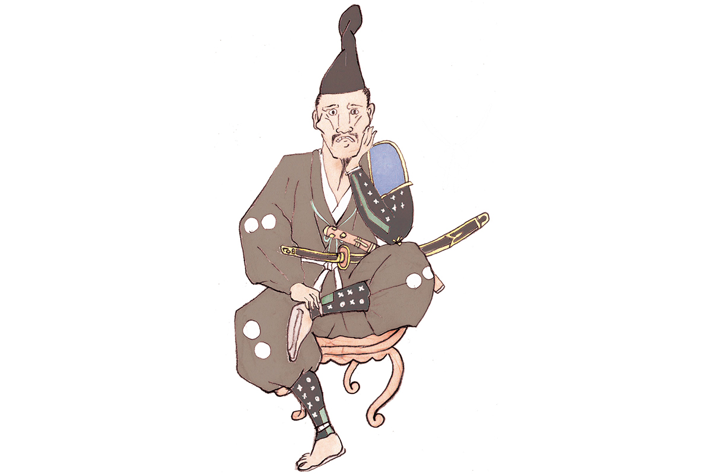
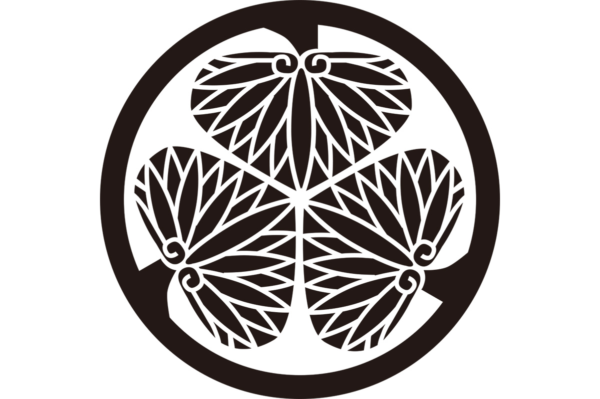

Префектура Айти · Окадзаки · история
Иэясу Токугава: заложник из Окадзаки, который закончил полтора века войн

Полтора века Японию раздирали войны, и закончил их человек, детство которого прошло в заложниках. Иэясу Токугава родился в замке Окадзаки, на востоке нынешней префектуры Айти, и основал династию сёгунов, правившую страной больше двух с половиной веков.
Эпоха
Конец века войн
С конца XV до конца XVI века Япония жила в состоянии почти непрерывной войны. Сёгунат Муромати, правивший страной из Киото, окончательно потерял власть, и место прежних наместников провинций заняли местные военные правители, даймё. Эту эпоху называют периодом Сэнгоку, «воюющих провинций», и её полководцы до сих пор остаются героями японских романов, сериалов и игр.
Иэясу Токугава (1543–1616) подвёл под этой эпохой черту. Он родился в провинции Микава, на востоке нынешней префектуры Айти, в роду Мацудайра; фамилию Токугава он взял позже. В детстве его звали Такэтиё, потом он сменил несколько имён: Мотонобу, Мотоясу и, наконец, Иэясу. Его главной женой была Цукияма-доно, второй стала Асахи-химэ.

Характер
Подождать, пока запоёт
Японцы любят описывать трёх объединителей страны одной фразой о кукушке, которая не хочет петь. Про Иэясу говорят: «Не поёт кукушка? Подожду, пока запоёт». Терпение и выдержка действительно привели его на самый верх. Он основал династию, при которой пятнадцать сёгунов Токугава один за другим правили страной, и такой долгий мир редкость не только для Японии, но и для мировой истории.
Иэясу владел всеми воинскими искусствами, но был человеком многих увлечений: любил соколиную охоту и го. Его тянуло ко всему новому, и среди его вещей были очки и часы с будильником, большая редкость для Японии того времени.
Жизнь
От заложника до сёгуна
В 1547 году маленького Такэтиё отдали заложником роду Ода. Через несколько лет он оказался заложником уже у могущественного рода Имагава и провёл в чужом доме долгие годы, учась терпеть. Перемена пришла в 1560 году: в битве при Окэхадзаме, на землях нынешней Айти, Нобунага Ода (1534–1582) разбил и убил Ёсимото Имагаву, правителя соседних провинций. Иэясу вернулся в Окадзаки, заключил союз с Нобунагой (по преданию, его скрепили в замке Киёсу, о котором есть отдельная статья) и взял имя Иэясу. В 1566 году он сменил фамилию Мацудайра на Токугава.
Дальше были и поражения, и победы. В 1573 году Иэясу был жестоко разбит при Микатагахаре, в соседней провинции Тотоми. В 1575 году он вместе с Нобунагой сражался при Нагасино, в горах восточной Айти. В 1579 году ему пришлось приказать своему старшему сыну Нобуясу покончить с собой.
После гибели Нобунаги в 1582 году силу набрал Хидэёси Тоётоми (1537–1598), и в 1584 году Иэясу встал против него в битве при Комаки и Нагакутэ, тоже на землях Айти (о ставке Хидэёси в этой войне рассказывает статья о замке Инуяма). Позже Иэясу служил Хидэёси и дошёл до места в совете пяти старейшин, высших советников правителя.
Когда Хидэёси умер, Иэясу сделал первый шаг к власти над страной. В 1600 году он победил в битве при Сэкигахаре, в 1603 году получил титул сёгуна и основал сёгунат в Эдо, будущем Токио. Уже в 1605 году он передал этот пост третьему сыну, Хидэтаде (1579–1632), но продолжал править. В 1614–1615 годах Иэясу сам руководил зимней и летней осадами Осаки и уничтожил дом Тоётоми. В 1616 году он умер от болезни в замке Сумпу и был похоронен на горе Куно; оба места находятся в соседней префектуре Сидзуока.
Слова
Смотреть в глубину сердца
Среди изречений, которые приписывают Иэясу, есть такое:
«Если хочешь узнать человека, вглядись в глубину его сердца. Не обманывайся его словами и видом»
Иначе говоря, чтобы по-настоящему понять другого, мало смотреть на то, что он показывает. Важно разглядеть, что у него в душе.
Где увидеть
Иэясу в префектуре Айти
Замок Окадзаки: место рождения
Иэясу родился в замке Окадзаки, и город считает его своим главным земляком. Замок стоит в парке над рекой, его башня открыта для посетителей, внутри музей по истории замка и рода Токугава.
Замок Окадзаки
- Адрес
- префектура Айти, Окадзаки, Косэй-тё, 561-1
- Телефон
- +81 564-22-2122
- Часы работы
- 9:00–17:00 (вход до 16:30)
- Выходные
- 29–31 декабря
- Цены / Вход
- 300 иен
- Сайт
- okazaki-kanko.jp
Храм Дайдзю-дзи: храм предков
Храм Дайдзю-дзи основал в 1475 году Тикатада Мацудайра, четвёртый глава рода. Здесь могилы восьми поколений Мацудайра, деревянная статуя Иэясу и поминальные таблички сёгунов Токугава, сделанные в рост каждого из них. По преданию, после битвы при Окэхадзаме юный Иэясу пришёл сюда, к могилам предков, и хотел покончить с собой, но настоятель отговорил его. Храм поставлен так, что из его ворот прямо на юг, за 3 км, видна башня замка Окадзаки.
Храм Дайдзю-дзи
- Адрес
- префектура Айти, Окадзаки, Камода-тё, Хиромото, 5-1
- Телефон
- +81 564-21-3917
- Часы работы
- 9:00–16:00 (вход до 15:30)
- Выходные
- без выходных
- Цены / Вход
- 500 иен
Гора Комаки: ставка в войне с Хидэёси
Невысокую гору Комаки к северу от Нагои первым укрепил Нобунага Ода. В 1584 году, перед битвой при Комаки и Нагакутэ, Иэясу за несколько дней перестроил старый замок в свою ставку: вокруг подножия выкопали ров и насыпали двойной земляной вал. Отсюда цепь укреплений тянулась на восток и перекрывала войску Хидэёси путь на юг. Валы и рвы, которые видны на горе, по большей части остались от той перестройки. У подножия работает центр «Рэкисиру Комаки» с макетами и фильмами о замке и о битве, на вершине стоит исторический музей.
Центр «Рэкисиру Комаки»
- Адрес
- префектура Айти, Комаки, Хориноути, 1-2
- Телефон
- +81 568-48-4646
- Часы работы
- 9:00–16:30
- Выходные
- третий четверг месяца (если это праздник, то следующий будний день)
- Цены / Вход
- 200 иен
Места за пределами Айти, связанные с Иэясу, это поле битвы при Сэкигахаре в префектуре Гифу и святилище Куно-дзан Тосёгу в Сидзуоке, где он был похоронен.
Фото: Мария Араи (иллюстрация).